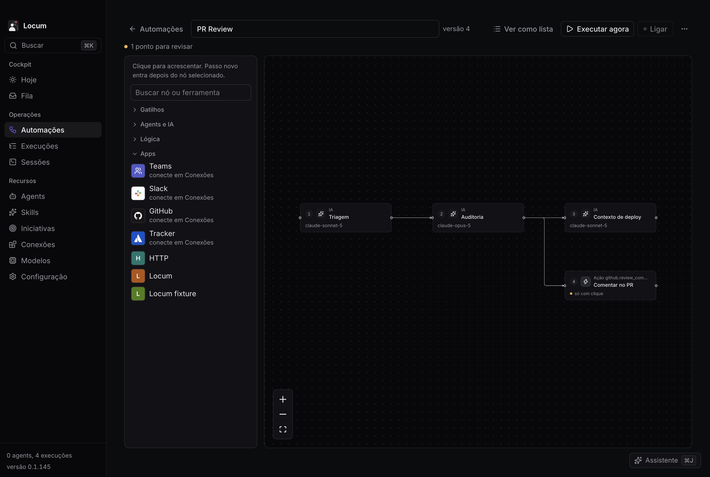
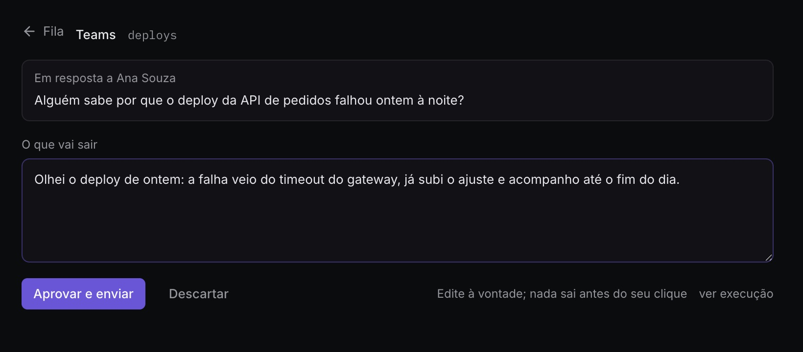
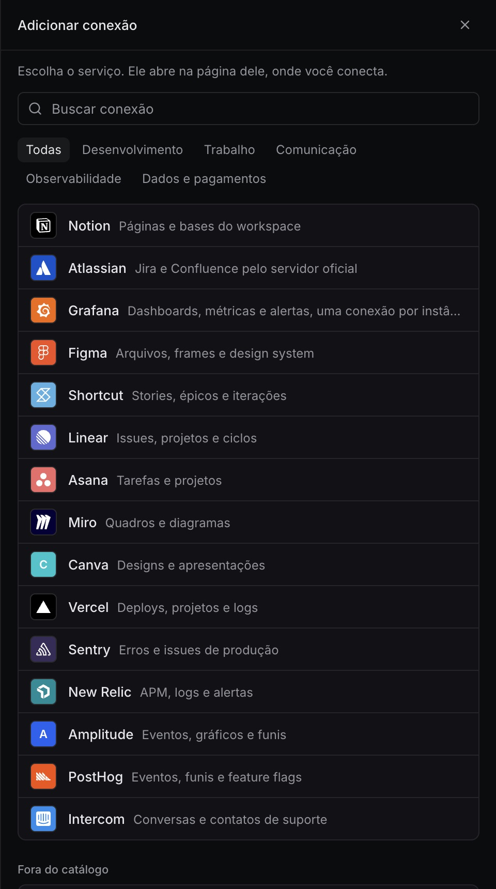

Local primeiro
Banco SQLite, credenciais no Keychain do macOS e execução na sua máquina. Não existe servidor do Locum no meio.
O Locum roda agents de IA em segundo plano, na sua máquina. Revisa o PR que chegou, lê o canal, cruza o contexto e escreve o rascunho. O que ele produz espera numa fila até você mandar.

Assistente de IA hoje é conversa: você abre, pede, espera e copia. O Locum inverte isso. O agent roda sozinho quando chega um PR, uma mensagem ou a hora marcada, e entrega o resultado onde você decide.
Banco SQLite, credenciais no Keychain do macOS e execução na sua máquina. Não existe servidor do Locum no meio.
Comentar no GitHub, responder no Slack ou abrir um card passa por uma porta única de aprovação. Cada passo escolhe aprovar, rascunho ou automático.
O Locum entrega as peças e você decide como encaixar. Filtro, horário, modelo e texto ficam à vista no fluxo. Nada acontece que você não montou.
Cada resposta, review ou card que o agent prepara para na Fila com o texto exato que vai ser publicado. Você edita, aprova ou descarta. Também pelo teclado, e pela bandeja do Mac.

Cada automação é um fluxo de nós que você vê, configura e apaga. Os modelos prontos já vêm montados, e continuam editáveis.

GitHub, Slack e Microsoft Teams para ler e responder. Servidores MCP remotos com OAuth de um clique para o resto, e qualquer servidor MCP seu fora do catálogo.
O Locum tem servidor MCP próprio, ligado no Claude Code com um clique. Tudo que a tela configura, o MCP configura também.
Hoje há pacote para Mac com Apple Silicon. Depois de instalado, o Locum se atualiza sozinho a cada versão.
O app instalado busca a próxima sozinho. Se precisar voltar para uma anterior, baixe o .dmg dela.